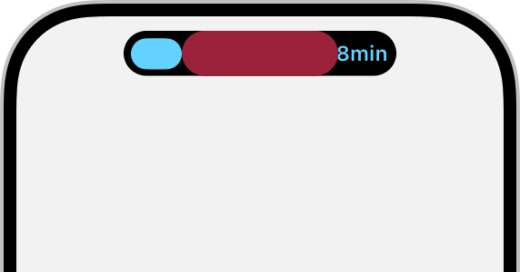
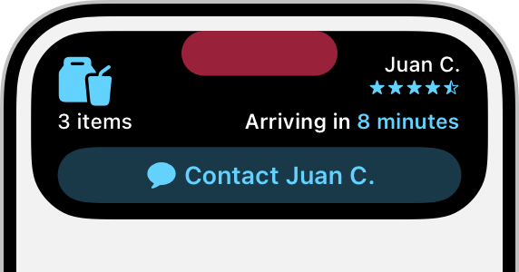

Our shell, beside the design direction
The native shell screenshots reveal the biggest opportunities: quieter navigation, stronger live values, and a stable media visualiser. The existing artwork and playback controls give us a good foundation.
Left: real shell renderer with test data. Right: our earlier generated concept, not Apple screenshots or implemented UI. Views are cropped and scaled to comparable widths, not a pixel-for-pixel size specification.
Follow-up: try the quieter navigation mockup with Comfortable and Compact sizing.
The official reference behind the comparison
Apple's illustrations favour readable live information, content that fits the curved surface, and essential actions. Their red centre marks the phone's sensor region, not a privacy status. Our desktop needs no camera cutout.




Official illustrations © Apple. Sources: Live Activities HIG · Design dynamic Live Activities. Also reviewed: your supplied iOS 27 schematic. Its navigation buttons are demonstration controls, not Island chrome.
Screenshot provenance and limits
Compact media, expanded media and timer were captured from the current release binary in a private compositor on 9 October. Downloads with history and recording are earlier same-day fixtures checked against the current layout code. Full desktop originals are linked from every current-shell image.
The screenshots use fixture players, transfers and capture sessions. They do not show personal apps. Cropping and uniform scaling happen only in this review page; the source PNG files are preserved unchanged.
Animation was disabled in the fresh run. It reached the dark states and playback/seek checks, then stopped because light-mode OCR read “tohome” instead of “home”. The full suite did not pass. These frames support a layout comparison, not a motion or complete interaction verdict.
The concept is illustrative: its Steam progress bar is not evidence that Steam exposes a percentage. Unknown totals must remain indeterminate. Its compact proportions, subtle outlines, duplicate media markers, and extra header should also be refined before implementation. Keep the user's clean appearance and avoid copying every decorative detail.
- Fresh captures:
build-rishot/hyprland-smoke-6_ldy6fp. - History:
build-rishot/hyprland-smoke-oz1vr7dl/recent-three-with-active.png. - Recording:
build-rishot/hyprland-smoke-2gyobld7/recording-alone.png. - Additional current transfer without history · Full original generated concept · Source audit and implementation landmarks.